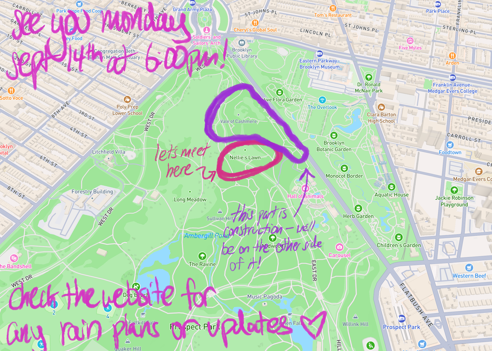
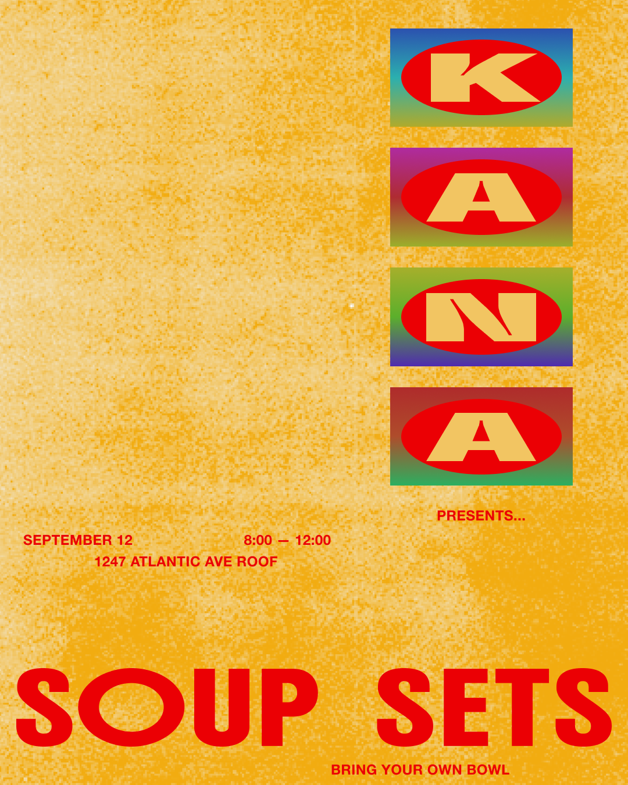
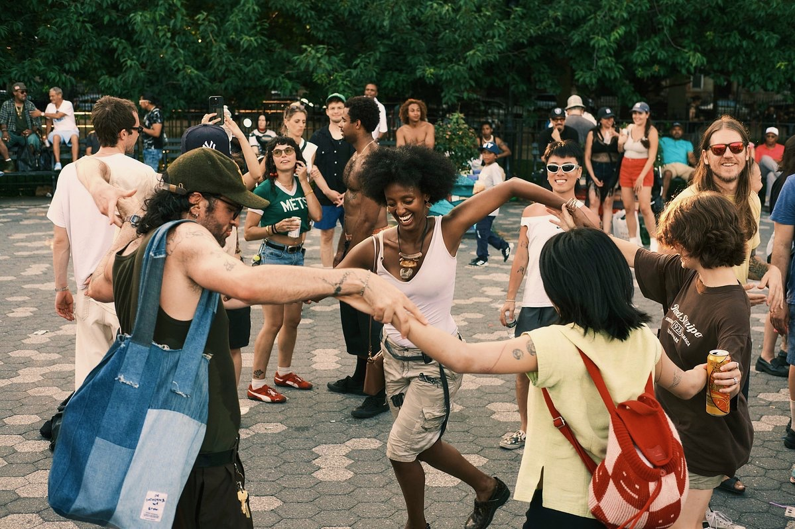

oh birthday! day of born… so they say. i am not feeling very born and instead would like to have a little death for my day. can you help me out?
a few times in the past couple years i've found myself laying on the ground while friends and strangers cover me with various items . a burial, if you will. a death. i'm not sure wants to die within me but i know something does. maybe you can help me out?

can you bring something to help bury me, monday september 14 at 6:00pm? maybe something that helps me have a good next year of life? we'll meet at nellie's lawn and commence with the burial at 6:30. and then we will frolick in the meadow before eating some PIE because i would really like to have pie on my birthday. you can bring some food or drink if you want, too.
if it looks like rain or some other tragedy i will update this page with more information! so check back here or text me that's also possible but u must know how much i don't like to text…

but what i do love… to DANCE! i would love to see you also on the night of sept 12 for soup sets with my dear friends alice naedo and abbi (KANA) .. 8-12 in bed-stuy, bring your own bowl! i will dj my most unhinged set yet guaranteed to make ur ass shake :D
and, of course, public service ! season ends on sunday the 13th in maria hernandez park. according to me and the gothamist, it's a bit utopian! come be part of my utopia, come dance
